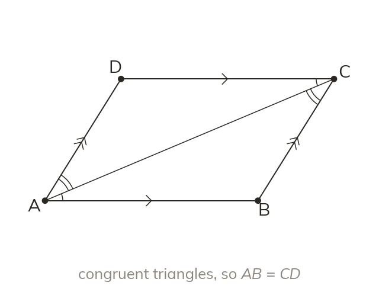
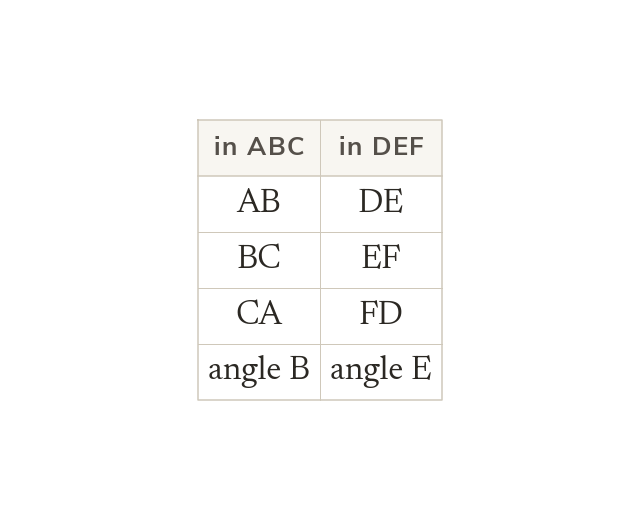
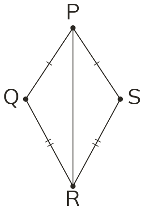
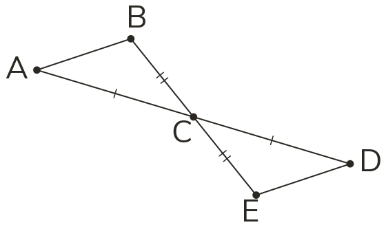
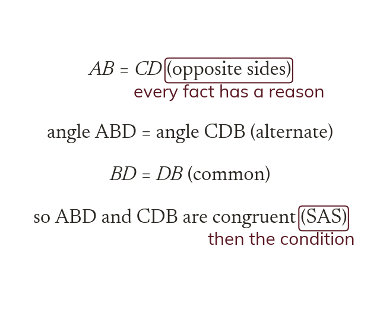
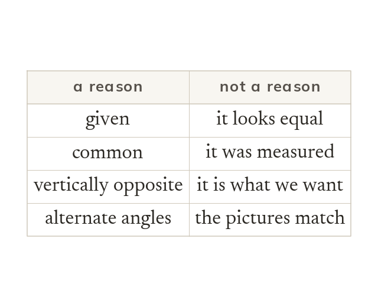
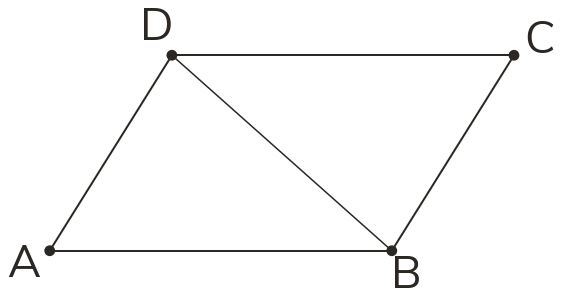
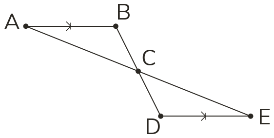
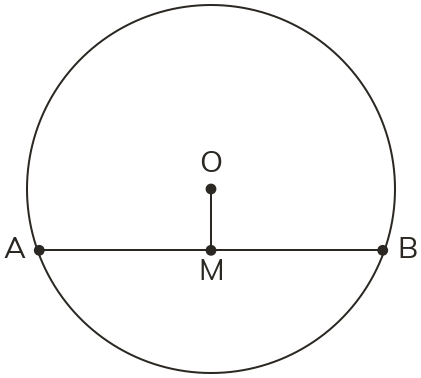

Congruence gives every part
Once two triangles are proved congruent, every pair of corresponding sides and angles is equal. So congruence proves a length or angle that was never given.
Congruence is not just a label for two triangles: it is a way to prove that two lengths or two angles are equal without ever measuring them. Today we use it as a tool.
Work down the page at your own pace. Write every answer in your book first, then click to check it.
Read each card, then follow the worked examples one step at a time.

Once two triangles are proved congruent, every pair of corresponding sides and angles is equal. So congruence proves a length or angle that was never given.

ABC congruent to DEF matches A with D, with E, C with F. So and angle = angle wherever they sit.


Pick an answer. If it's wrong, the feedback tells you which mistake it was.
Read each card, then follow the worked examples one step at a time.

Each line states one fact with its reason in brackets. The condition comes next, then the conclusion the question asked for.

A reason is a geometric fact: given, common, vertically opposite, alternate angles. How it looks, a measurement, or the thing being proved is never a reason.



Pick an answer. If it's wrong, the feedback tells you which mistake it was.
Finished? Next lesson: 8.16.6 Constructing Triangles and Circles.
Log in, then search for a code to practise that skill.
Videos, worksheets and more on each part of this lesson.